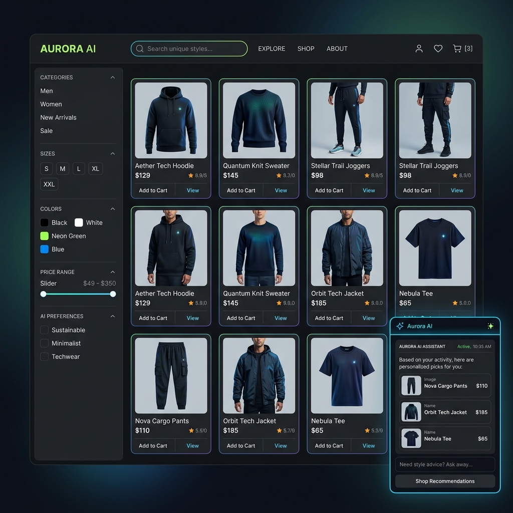
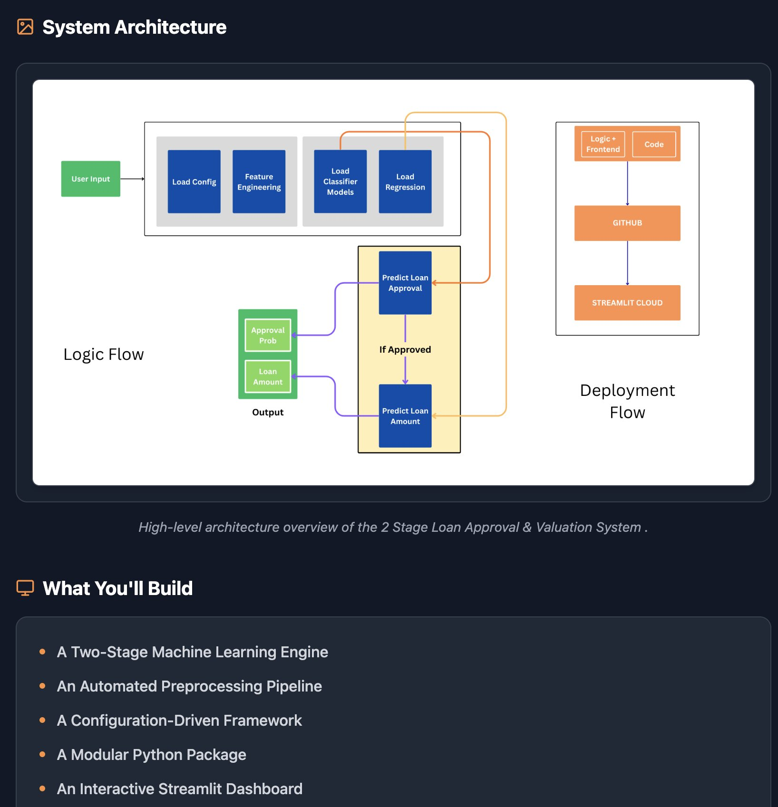
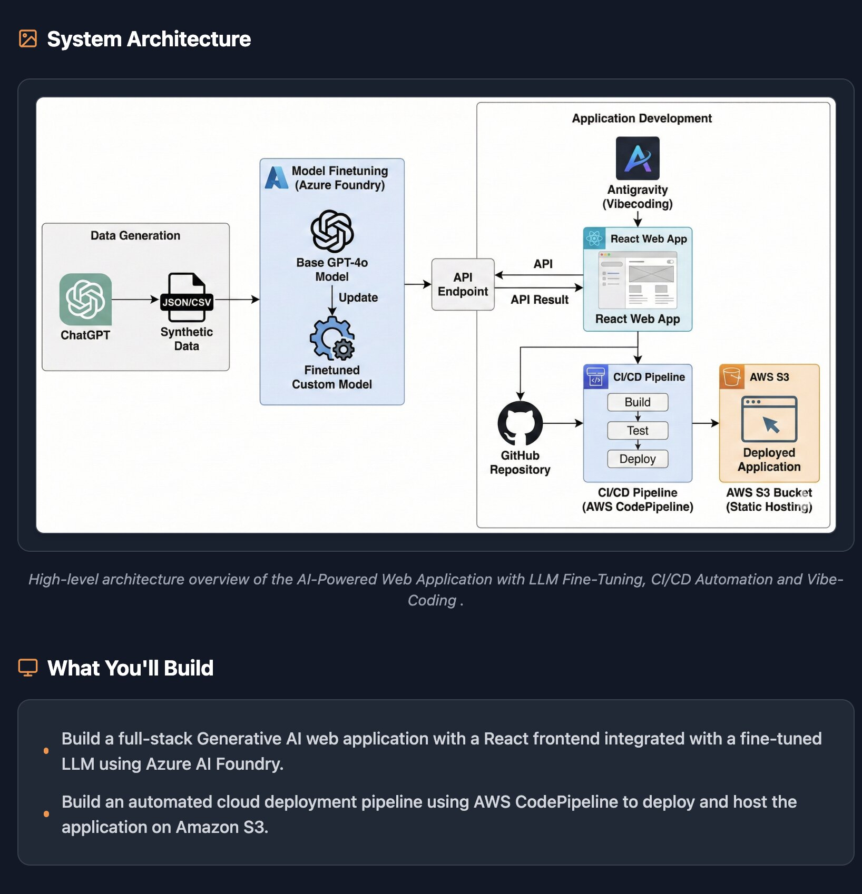
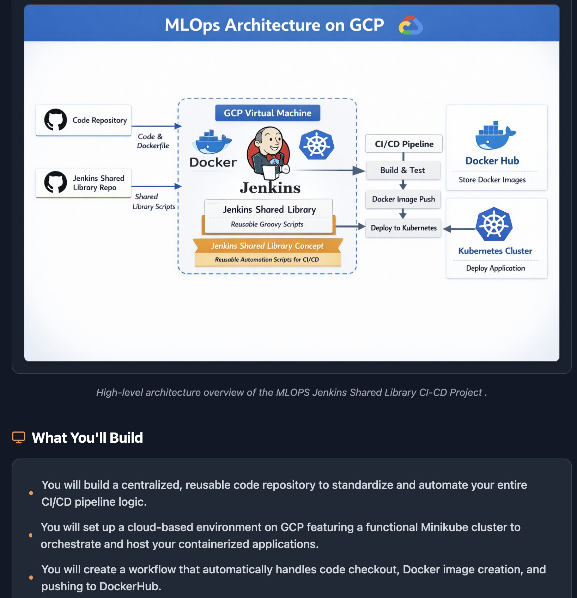

Building production-ready GenAI systems, RAG pipelines, and cloud-native ML.
AI/ML Engineer
I'm an AI/ML Engineer (B.Tech, 2027) building production-ready Generative AI applications powered by conversational RAG, LLM-backed FastAPI services, and LangChain. I deploy cloud-native systems on Kubernetes with ELK Stack observability and ship reliable ML through Docker, AWS, and GitHub Actions CI/CD. Currently focused on scalable MLOps workflows that turn prototypes into live, monitored services.
I'm a B.Tech candidate at S.G.S.I.T.S. Indore (CGPA 7.0/10), specializing in Generative AI, applied ML, and MLOps. My work spans the full lifecycle — from data preprocessing and model training to containerized deployment and real-time log observability.
I build conversational RAG systems that let users query entire codebases semantically, GenAI screening tools running on Kubernetes with full ELK monitoring, and end-to-end ML pipelines using Scikit-learn Pipelines and GridSearchCV.
I'm actively looking for Summer 2026 internships and full-time AI/ML Engineer roles where I can contribute to impactful GenAI and MLOps work.
Open to Summer 2026 Internships & Full-time AI/ML Roles
Indore, Madhya Pradesh, India
Generative AI · MLOps · Cloud-Native ML

Intelligent Product Retrieval & Chatbot Agent with FastAPI & React
• Engineered an intelligent e-commerce agent using **Pydantic AI** and **Groq LLM** to power a natural conversational chatbot for personalized shopping advice, dynamic product styling, and order status retrieval.
• Designed and implemented a responsive **React** frontend connected to a modular **FastAPI** backend, managing secure cart operations, user authentication, and product catalogs with **MongoDB** for persistence.
• Orchestrated automated containerized deployments on **AWS** using a custom **Docker** and **GitHub Actions** CI/CD pipeline, ensuring robust infrastructure scaling and rapid feature delivery.

Production-Ready Conversational RAG over GitHub Repositories
• Built a production-ready conversational RAG system that indexes entire GitHub repositories
into a ChromaDB vector store, enabling semantic code
search and repository-aware Q&A over complex codebases.
• Architected a modular FastAPI backend with LangChain,
isolating retrieval, vector storage, session management, and rolling conversation
summarization into dedicated, independently testable components.
• Reduced prompt token usage in extended sessions by implementing session-scoped
memory with automatic conversation summarization, preserving long-term context
without exceeding LLM context limits.

GenAI Resume Screener with ELK Observability on Kubernetes
• Engineered a cloud-native GenAI application that leverages
GPT-4 to automatically screen resumes against job descriptions, producing
match percentages, skill gap analysis, and hiring decision summaries.
• Deployed the application as a containerized pod on a Minikube Kubernetes
cluster inside a VM, demonstrating production-grade container orchestration
with horizontal scaling capability.
• Implemented a full ELK Stack observability pipeline using
Filebeat as a sidecar agent to ship application logs to
Logstash for processing, Elasticsearch for indexed
storage, and Kibana for real-time system health dashboards.

End-to-End Scikit-learn Pipeline with Hyperparameter Tuning
• Architected a two-stage ML inference pipeline that chains a
classification model (loan approval) with a regression model (loan amount estimation),
enabling a unified, sequential prediction workflow in a single user request.
• Engineered end-to-end Scikit-learn Pipelines with modular preprocessing
and feature engineering stages; applied GridSearchCV hyperparameter tuning
to optimize model performance across both stages.
• Deployed a production-style interactive ML application on Streamlit
Cloud, demonstrating full-cycle capability from data preprocessing and model
training to live inference and user-facing UI.
Bachelor of Technology (B.Tech)
Expected Graduation: 2027
Relevant Coursework: Object-Oriented Programming · Machine Learning · Artificial Intelligence · Data Analytics · Cloud Computing · Software Engineering
Issued by Red Team Leaders
June 2026
Credential ID: 93cc00f8370b7800 — Validates expertise in securing LLM-powered
applications, covering prompt-injection defense, model-threat modeling, and
adversarial-robustness practices for production GenAI systems.
AI/ML Engineer · Generative AI · MLOps
Open to Summer 2026 internships and full-time AI/ML Engineer roles (2026–2027). I bring hands-on experience with production-ready GenAI applications, conversational RAG, Kubernetes + ELK observability, and CI/CD-driven MLOps workflows.
Indore, Madhya Pradesh, India